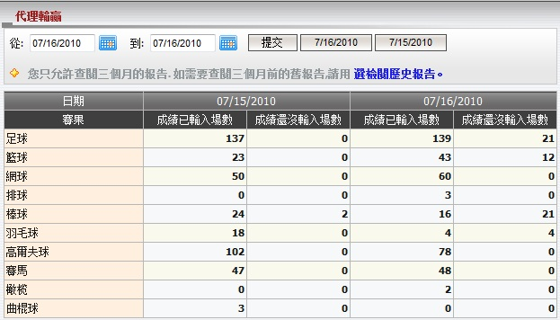
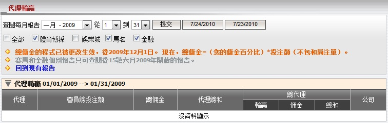
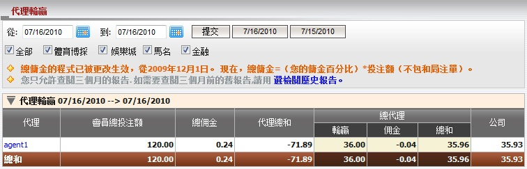
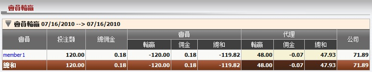
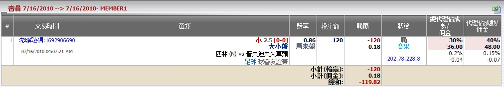

代理輸贏
定義:
這份報告顯示所有必要的信息, 以幫助總代理清楚了解個別會員在特定日期裡的輸贏。
當我們開啟 "代理輸贏", 頁面會顯示今日與昨日的個別運動類型的賽事場數, 當中包括 "成績已輸入場數" 和 "成績還沒輸入場數" (圖1.1)。
- 成績已輸入場數: 賽事以輸入成績之總數
- 成績還沒輸入場數: 賽事還未輸入成績之總數

圖 1.1
注: 如果您要查閱超過3個月的報告, 請點擊 選檢閱歷史報告 (圖1.2)。在此報告, 您可查閱過去18個月的數據。

圖 1.2
在 "從" 和 "到" 選擇日期, 然後點擊 "提交" 以查閱指定日期的輸贏報告 (圖1.3)。

圖 1.3
用詞註解:
-
會員總投注交易: 從屬個別代理的所有會員總投注額。
- 總佣金: 總代理從上線處可能得到的最高佣金數額。
- 代理總和: 總代理收到或支付予代理的數額。
- 總代理輸贏: 總代理基於佔成數的輸贏數額。
- 總代理佣金: 扣除代理佣金後, 總代理上線處收到的佣金數額。
- 總代理總和: 總代理包括佣金的總輸贏數額。
- 公司: 總代理需支付予或從上線處接收到的總數額。
點擊代理用戶名以查詢從屬於特定的代理的會員輸贏報告 (圖1.4) 。

圖 1.4
用詞註解:
-
投注額: 所有會員的總投注數額。
- 總佣金: 代理從上線處可能得到的最高佣金數額。
- 會員輸贏: 會員輸贏的數額。
- 會員佣金: 會員從代理處得到的佣金數額。
- 會員總和: 會員包括佣金的總輸贏數額。
- 代理輸贏: 代理基於佔成數的輸贏數額。
- 代理佣金: 扣除會員佣金後, 代理上線處收到的佣金數額。
- 代理總和: 代理包括佣金的總輸贏數額。
- 公司: 代理需支付予或從上線處接收到的總數額。
如何理解報告:
從圖1.3和圖1.4中, 我們可以解出以下的輸贏報告:
- Member1 輸的投注 (投注額 = 120, 會員佣金 = 0.18), 所以他包括佣金的總輸贏 = -119.82.
- Agent1 基於佔成數的贏取數額, 佣金 = 47.93, 但他從member1得到119.82, 所以他必須支付 master1 71.89 .
- Master1 基於佔成數的贏取數額, 佣金 = 35.96, 但他從agent1得到71.89, 所以他必須支付上線 35.93.
為了理解整份的輸贏報告, 我們必須深入到會員級別, 然後點擊該會員的用戶名(例如: member1) 然後會員投注歷史頁面將被打開, 並向我們顯示個別投注的的細節如下(圖1.5):
而現在, 例子將告訴您如何計算會員該投注單的輸贏。在現實中, 我們必須計算每張投注單的輸贏及佣金, 才能獲得總代理, 代理, 會員的輸贏總計。

圖 1.5
讓我們根據member1計算master01的輸贏, 總代理必須和agent1交涉的數額顯示在圖1.3和圖1.4。 在這個例子中, member1投注於賽事匹林(中) -vs- 普夫迪夫火車頭, 投注額 = 120, 賠率 = 0.86, 會員佣金 = 0.15%, 總代理佔成 = 30%, 總代理佣金 = 0.2%, 代理佔成 = 40%, 代理佣金 = 0.15%和會員輸此註單。
圖 1.4: 這是會員, 代理的輸贏數額。
- 投注額 = 會員本金 = 120.
- 總佣金 = 投注額 * 代理佣金 = 120 * 0.15% = 0.18.
- 會員輸贏 = -投注額 * 賠率 = -120 * 1 = -120.
- 會員佣金 = 投注額 * 會員佣金 = 120 * 0.15% = 0.18.
- 會員總和 = 會員輸贏 + 會員佣金 = -120 + 0.18 = -119.82.
- 代理輸贏 = 投注額 * 賠率 * 代理佔成 = 120 * 1 * 40% = 48.
- 代理佣金 = 投注額 * 代理佣金 * (1 – 代理佔成) – 會員佣金 = 120 * 0.15% * (1 – 0.4) – 0.18 = -0.07.
- 代理總和 = 代理輸贏 + 代理佣金 = 48 – 0.07 = 47.93.
- 公司 = -(會員總和 + 代理總和) = -(-119.82 + 47.93) = 71.89.
圖 1.3: 這是總代理輸贏, 和他必須於上線/下線 (支付或收取) 交涉的金額。
- 會員投注額 = 投注額 = 120.
- 總佣金 = 投注額 * 總代理佣金 = 120 * 0.2% = 0.24.
- 代理總和 = -公司如圖 1.3 = -71.89.
- 總代理輸贏 = 投注額 * 賠率 * 總代理佔成 = 120 * 1 * 30% = 36.
- 總代理佣金 = 投注額 * [總代理佣金 * [1 – (總代理佔成 + 代理佔成)] – 代理佣金 * (1 – 代理佔成)] = 120 * [0.2%*[1 – (30% + 40%)] – 0.15%*(1 – 40%)] = -0.04.
- 总代理总和 = 總代理輸贏 + 總代理佣金 = 36 - 0.04 = 35.96.
- 公司 = -(代理總和 + 總代理總和) = -(-71.89 + 35.96) = 35.93.
注:
- 若 賠率 < 0
- 如果會員贏那麼賠率 = 1。
- 如果會員輸那麼賠率 = |當前賠率|。
- 若 賠率 > 0
- 如果會員贏那麼賠率 = 當前賠率。
- 如果會員輸那麼賠率 = 1。
- 如果投注類別為波膽, 1x2, 總進球, 半場/全場, 優勝冠軍, 混合過關那麼賠率 = 當前賠率 - 1。